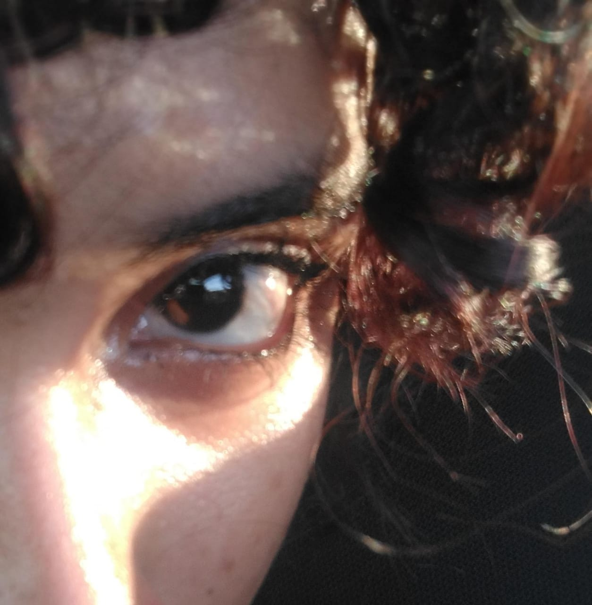

Esta fue la primera foto que me mandó normal de su linda carita 😊
Y allí me dije: "qué chica tan lindaaaa es la Berakel, ¿cómo se pudo fijar en mí?" 💖
Esta fue la primera foto que me mandaste normal 💖
Recuerdo que te daba pena aún mandar fotos normales 🌹
Allí fue donde miré tu ojo con más detalle y me enamoré de esa mirada
Esta es la última foto que me mandaste, y cada vez que la veo me enamoro más 💗
Por más que te vea, solo encuentro en ti la perfección misma